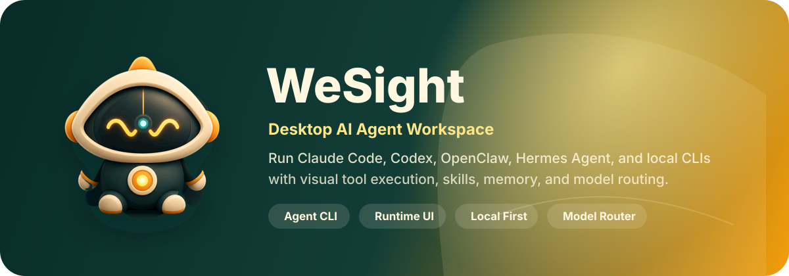
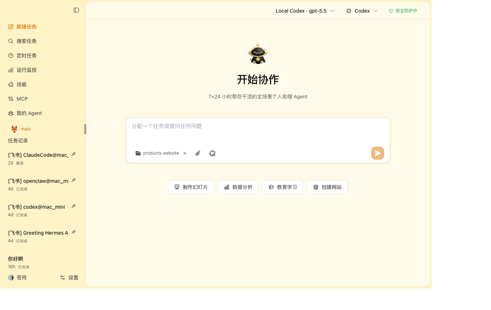
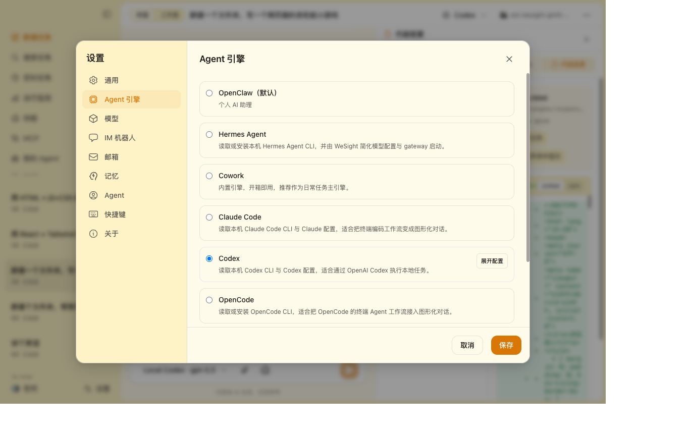
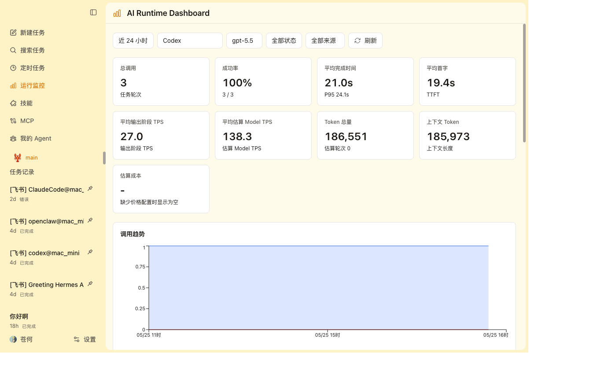
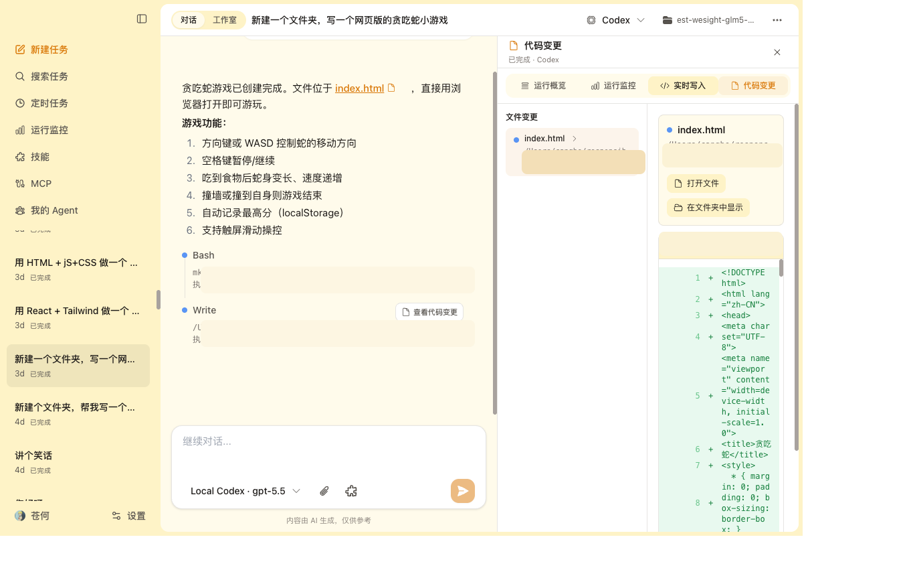
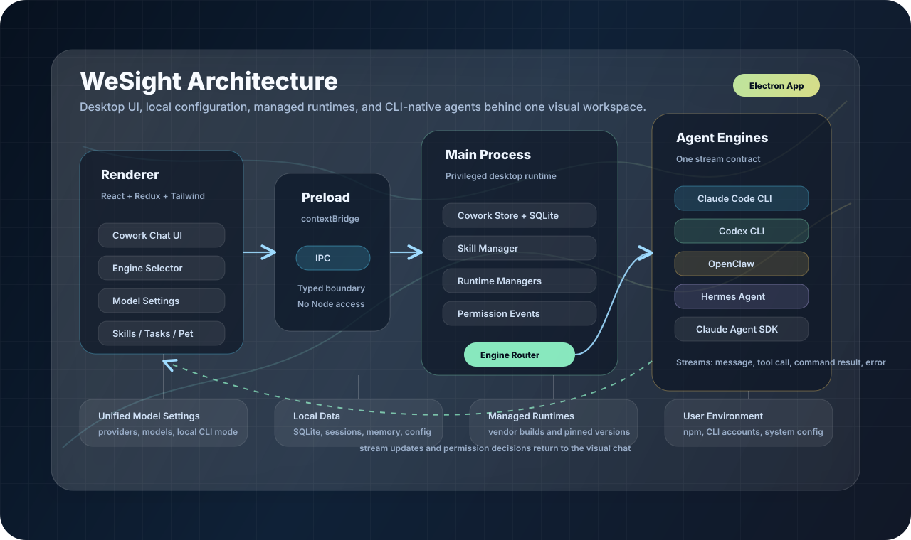

1. 发现并复用本机 CLI
A1WeSight 先做的是“识别你机器上已经有的 Agent 入口”，而不是强迫你重装一遍。这个设计把新手安装和老用户迁移放在同一条路径里。
用途- 从终端工作流迁移到图形化工作台。
- 复用 Claude Code / Codex / OpenClaw / Hermes Agent 的既有配置。
- 减少重复安装、重复登录和重复调试环境变量。
它把本机 CLI、模型供应商、IM 通道、技能市场、运行监控和桌面宠物收进一个可视化工作台。对已经在终端里跑 Claude Code、Codex、OpenClaw、Hermes Agent 的人来说，WeSight 不是再造聊天壳，而是把散落的配置和执行路径统一到一个控制面。

先看判断，再看细节：WeSight 解决的不是“能不能跑 Agent”，而是“怎么把安装、权限、模型、IM、监控和扩展统一管理”。
WeSight 的价值在于把终端原生编码 Agent 的碎片化流程产品化：你不必分别处理 CLI 安装、模型配置、权限事件、文件 diff、消息通道和运行监控，而是把它们放进同一张桌面工作台里，按任务去驱动。
如果你已经有一套可用的终端 Agent 生态，它更像“控制台”和“编排器”；如果你还没有稳定的本机环境，它更像一条更友好的上手路径。这部分不是功能清单，而是使用顺序：先发现/复用，再路由，再观察，最后扩展。
WeSight 先做的是“识别你机器上已经有的 Agent 入口”，而不是强迫你重装一遍。这个设计把新手安装和老用户迁移放在同一条路径里。
用途模型配置在一个地方管理，再按引擎映射过去；这避免了“每个 CLI 一套模型设置”的分裂状态，也方便在同一任务里切换供应商比较效果。
用途它把一次 Agent 任务当成可追踪的运行单元：引擎、模型、Token、TTFT、TPS、工具耗时、状态和总耗时都被记录下来，方便比较和回放。
用途WeSight 不把 Agent 限定在桌面前台，它能把任务变成 IM 入口和机器人配置。这样，执行、提醒、通知和互动就能脱离单一页面。
用途WeSight 不是单次会话工具，而是把技能市场、定时任务和记忆系统放在一起，让 Agent 形成连续工作流，而不是做完一轮就散。
用途这 4 张图基本就把它的产品形态说清了：聊天、引擎、监控、工作区，不是单点工具。

▲ Cowork Chat / 协作对话
把本机 coding agent 直接放进桌面聊天流，适合对话、工具面板和权限事件一起看。

▲ Agent Engines / 引擎设置
Claude Code、Codex、OpenClaw、Hermes Agent、OpenCode、Qwen Code、DeepSeek-TUI、内置 runtime 一起管理。

▲ Runtime Dashboard / 运行仪表盘
任务不是黑盒：引擎、模型、Token、TTFT、TPS、成本、状态都能被追踪。

▲ Live Workspace / 实时工作区
文件写入、代码变化、产物和活动记录同步可见，适合长任务和调试。
这是它为什么适合做控制台，而不是单纯聊天壳的关键：职责分层清晰，安全边界明确。

主进程负责窗口生命周期、托盘、桌面宠物、SQLite 持久化、Agent 引擎路由、外部 CLI 适配、IM gateway、技能管理、定时任务和文件活动跟踪。换句话说，真正“管活儿”的地方都在这里。
渲染层负责 Cowork Chat、Studio、Live Workspace、Runtime Dashboard 和设置界面；它更像“操作台”，展示状态、接收输入、渲染流式输出和文件变更。
这是决策卡里必须说清楚的部分：它是本机 AI Agent 控制台，不是通用云端 SaaS。
先看官方 release，再看 README_zh.md；如果你要本地开发，就按开发路径走。
WeSight 不是一个“再做一个 AI 聊天框”的项目，而是一个把本机 Agent 生态变成可视化、可配置、可审计、可扩展控制面的桌面工作台；如果你已经在做本地 Agent 工作流，它很值得看。
当你要评估一个“本机 AI Agent 桌面控制台”值不值得用，优先看它是否把 CLI、模型、权限、IM、监控和技能统一到一个入口，而 WeSight 正好把这条链路完整展示出来了。